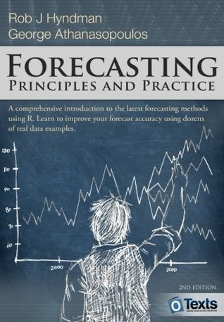
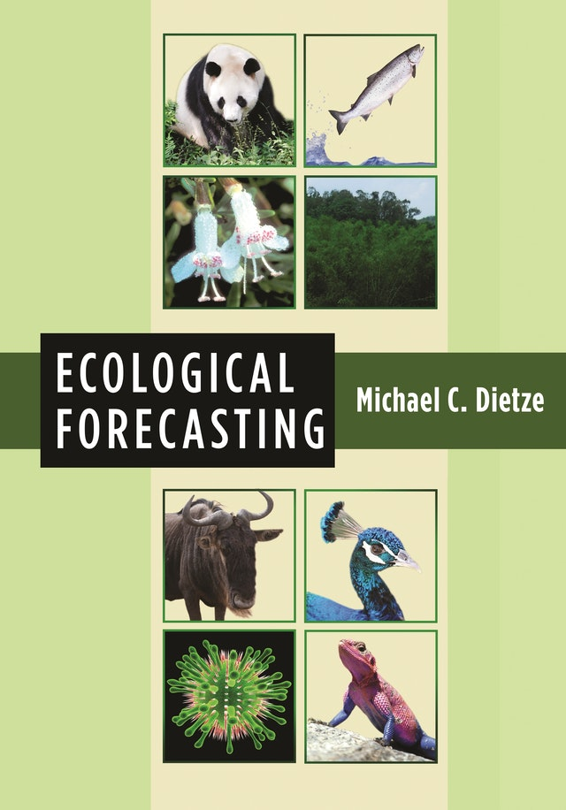

Ecologists are asked to respond to unprecedented environmental challenges. How can they provide the best scientific information about what will happen in the future? The goal of this seminar is to bring together the concepts and tools needed to make ecology a more predictive science. Topics include Bayesian calibration and the complexities of real-world data; uncertainty quantification, partitioning, propagation, and analysis; feedback from models to measurements; state-space models and data fusion; iterative forecasting and the forecast cycle; and decision support. A semester-long project will center on data from the Smithsonian Conservation Biology Institute (SCBI) forestry reserve.
Pre-requisites:
This semester you will:
shiny dashboards like this one.We’ll be using the following two textbooks:

Over the course of the semester there will be several projects relating to the learning goals. They’ll involve some combination of the following data:
macleish R package)This will be measured by a combination of
All students are expected to adhere to the Smith College Academic Honor Code:
Smith College expects all students to be honest and committed to the principles of academic and intellectual integrity in their preparation and submission of course work and examinations. Students and faculty at Smith are part of an academic community defined by its commitment to scholarship, which depends on scrupulous and attentive acknowledgement of all sources of information, and honest and respectful use of college resources.
In the case of a suspected violation, I will follow the procedures for faculty:
Smith is committed to providing support services and reasonable accommodations to all students with disabilities. To request an accommodation, please register with the Disability Services Office at the beginning of the semester. To do so, call 413.585.2071 to arrange an appointment with Laura Rauscher, Director of Disability Services.
Once you have received an accommodation letter, please provide your instructor with a copy.
As the instructor and assistants for this course, we are committed to making participation in this course a harassment-free experience for everyone, regardless of level of experience, gender, gender identity and expression, sexual orientation, disability, personal appearance, body size, race, ethnicity, age, or religion. Examples of unacceptable behavior by participants in this course include the use of sexual language or imagery, derogatory comments or personal attacks, deliberate misgendering, trolling, public or private harassment, insults, or other unprofessional conduct.
As the instructor and assistants we have the right and responsibility to point out and stop behavior that is not aligned to this Code of Conduct. Participants who do not follow the Code of Conduct may be reprimanded for such behavior. Instances of abusive, harassing, or otherwise unacceptable behavior may be reported by contacting the instructor.
All students, the instructor, the lab instructor, and all assistants are expected to adhere to this Code of Conduct in all settings for this course: lectures, labs, office hours, tutoring hours, and over Slack.
This Code of Conduct is adapted from the Contributor Covenant, version 1.0.0, available here.